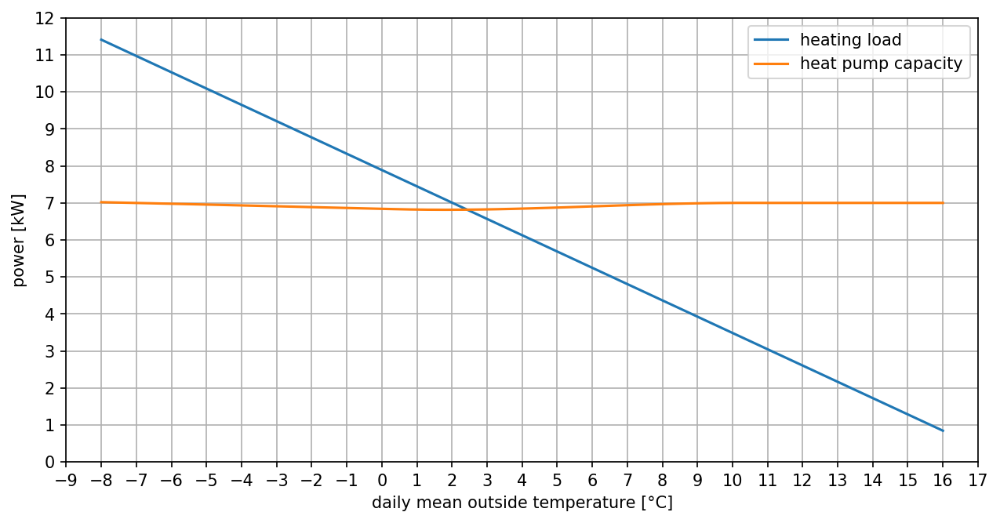
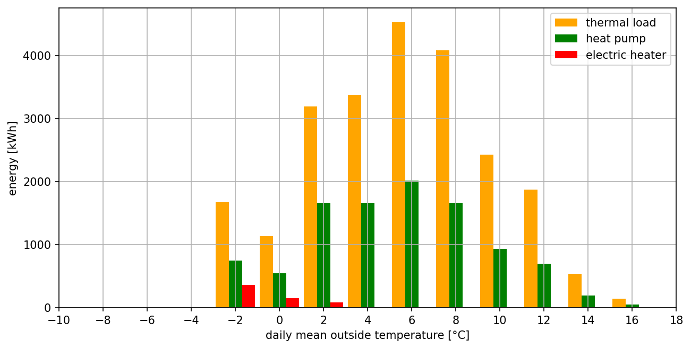
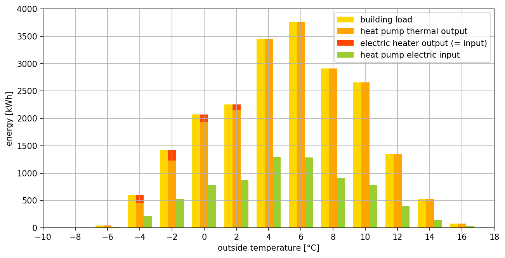

In dit artikel wordt de binmethode toegelicht waarmee men het elektrisch energieverbruik van een warmtepomp kan ramen. De werking van de warmtepomp is gebaseerd op de mechanische dampcompressiekoelcyclus. De beschouwde warmtepomp betreft een inverter-aangedreven lucht/water-warmtepomp die is uitgerust met een elektrische bijverwarming (mono-energetisch systeem).
Het energieverbruik van de warmtepomp zal afhangen van het gebouw dat de warmtepomp moet verwarmen. De warmtebelastingskarakteristiek van het gebouw beschrijft de warmtebehoefte van het gebouw i.f.v. de buitentemperatuur. Het geeft weer welk thermisch vermogen het gebouw vereist om de gewenste binnentemperatuur in het gebouw te handhaven bij een zekere buitentemperatuur. De warmtebelastingskarakteristiek van het gebouw kan men afleiden uit de warmteverliesberekening van het gebouw. Men onderscheidt:
De verwarmingscapaciteit van een warmtepomp wordt beschreven door de verwarmingscapaciteitskarakteristiek. Deze geeft weer welk thermisch vermogen de warmtepomp in stationair bedrijf kan leveren bij een zekere buitentemperatuur en een zekere watervertrektemperatuur. Men kan deze afleiden uit de prestatietabellen van de warmtepomp die de fabrikant meegeeft.
De binmethode om het energieverbruik van de warmtepomp over een stookseizoen te ramen, heb ik een in een computerprogramma geïmplementeerd met de programmeertaal Python. Het gebruik van het programma wordt gedemonstreerd in een Jupyter Notebook dat men hier kan terugvinden. Hieronder wordt de achtergrond toegelicht waarop het computerprogramma is gebaseerd.
De warmtebelastingskarakteristiek kan a.h.v. de volgende parameters worden bepaald:
Q_cond_des is het warmtegeleidingsverlies doorheen de gebouwschil onder ontwerpcondities ('des' refereert aan 'design'). Deze parameter volgt direct uit de warmteverliesberekening van het gebouw. Het is het warmteverlies dat zou optreden bij de koudst mogelijke buitentemperatuur.Q_vent_des is het ventilatie- of infiltratieverlies. Als een gebouw wordt geventileerd, wordt verse buitenlucht in het gebouw gebracht. Deze buitenlucht zal in het gebouw warmte opnemen. Door warmterecuperatie kan men het ventilatieverlies beperken (de naar buiten afgevoerde binnenlucht draagt in een warmtewisselaar warmte over aan de verse ventilatielucht die van buitenaf wordt aangezogen door het ventilatiesysteem). In de tabel hieronder werd het ventilatieverlies bepaald op basis van het ventilatiedebiet dat door het EPB wordt vereist en is er aangenomen dat 80% van de thermische energie in de afvoerlucht gerecupereerd wordt.Q_dhw_des is het warmtevermogen dat gebruikt wordt om sanitair koud water op te warmen.T_outside_bal is de buitentemperatuur waarvoor het gebouw geen warmtebehoefte heeft. Deze temperatuur wordt de balans- of basistemperatuur van het gebouw genoemd. Deze temperatuur is lager dan de gewenste binnentemperatuur in het gebouw. Behalve van de gewenste binnentemperatuur in het gebouw, hangt deze af van de grootte van interne warmtewinsten in het gebouw, van zonnestraling die invalt op het gebouw of via ramen in het gebouw binnendringt en van de isolatiegraad van het gebouw. De basistemperatuur van een gebouw is in werkelijkheid dus een tijdsvariabel gegeven. Gasleveranciers hanteren voor voorspellingen van het aardgasverbruik een aangenomen basistemperatuur van 16,5 °C. Voor de bepaling van de SCOP (seasonal coefficient of performance) van warmtepompen hanteert de norm EN 14825 een aangenomen basistemperatuur van 16 °C.T_outside_des is de koudst mogelijke buitentemperatuur waarop de warmteverliesberekening van een gebouw steunt. Deze ontwerpwaarde wordt bv. in de norm EN 12831 opgegeven. In de geografische regio onder beschouwing wordt een ontwerpbuitentemperatuur voor verwarming opgegeven van -8 °C.T_room_des is de gewenste binnentemperatuur waarop de warmteverliesberekening van een gebouw steunt. Voor verschillende types van binnenruimten kunnen andere ontwerpwaarden aangenomen worden. Voor de raming van het energieverbruik van de warmtepomp wordt de gemiddelde binnentemperatuur op het niveau van het gebouw in aanmerking genomen.eff_inst is het rendement van de verwarmingsinstallatie. Niet alle door de warmtegenerator geproduceerde warmte wordt via de warmte-emitters aan de ruimten afgegeven; een gedeelte raakt onderweg verloren. Voor moderne verwarmingsinstallaties wordt in de regel een richtwaarde van 90% aangenomen.In de Jupyter Notebook waarmee het computerprogramma wordt gedemonstreerd zijn de volgende waarden toegepast:
| Parameter | Waarde | Eenheid |
|---|---|---|
Q_cond_des |
10,321 | kW |
Q_vent_des |
0,928 | kW |
Q_dhw_des |
0,759 | kW |
T_outside_bal |
16 | °C |
T_outside_des |
-8 | °C |
T_room_des |
20,385 | °C |
eff_inst |
90 | % |
Noteer dat het hier om daggemiddelde waarden gaat. Zo werd ook het thermisch vermogen Q_dhw_desvoor sanitair warmwaterbereiding (SWW-bereiding) bekomen door de totale dagelijkse warmtebehoefte voor SWW-bereiding als het ware over een volledig etmaal (24 h) uit te smeren. In realiteit zal de SWW-bereiding maar over een beperkt aantal uren van de dag plaatsvinden. Dit impliceert dat de dagelijkse warmtehoeveelheid t.b.v. SWW-bereiding over een kortere tijdspanne zal moeten geleverd worden. Bijgevolg, het door de warmtepomp toe te voeren thermisch vermogen zal in perioden dat SWW-bereiding actief is hoger zijn dan het daggemiddeld vermogen. In het computerprogramma is wel voor de bepaling van het daggemiddeld thermisch vermogen t.b.v. SWW-bereiding aangenomen dat het totaal dagelijks sanitair waterverbruik (warm én koud) van een doorsnee gezin van 4 personen (348 liter) van 10 naar 55 °C wordt verwarmd. (Een praktische vuistregel stelt dat het dagelijks warmwaterverbruik per persoon rond 50 liter schommelt.)
De verwarmingscapaciteitskarakteristiek van de warmtepomp kan worden bepaald aan de hand van de gegevens die men in prestatietabellen van de warmtepomp kan terugvinden. Een prestatietabel geldt voor een gegeven, vaste watervertrektemperatuur. In de tabel wordt voor een reeks van buitentemperaturen opgegeven welke de verwarmingscapaciteit is van de warmtepomp (P therm.), welk elektrisch vermogen de warmtepomp daarvoor consumeert (P elek.) en welke prestatiecoëfficiënt (COP) deze dan behaalt onder stationair bedrijf. Er worden voor verschillende watervertrektemperaturen aparte prestatietabellen gepubliceerd. De tabel hieronder geeft een voorbeeld van zo'n prestatietabel. Deze geldt bij een watervertrektemperatuur van 55 °C (W55).
| To [°C] | P elek. [kW] | P therm. [kW] | COP |
|---|---|---|---|
| 22 | 2.24 | 7 | 3.13 |
| 21 | 2.26 | 7 | 3.1 |
| 20 | 2.27 | 7 | 3.08 |
| 19 | 2.31 | 7 | 3.03 |
| 18 | 2.35 | 7 | 2.98 |
| 17 | 2.39 | 7 | 2.93 |
| 16 | 2.42 | 7 | 2.89 |
| 15 | 2.46 | 7 | 2.85 |
| 14 | 2.51 | 7 | 2.79 |
| 13 | 2.55 | 7 | 2.75 |
| 12 | 2.6 | 7 | 2.69 |
| 11 | 2.65 | 7 | 2.64 |
| 10 | 2.69 | 7 | 2.6 |
| 9 | 2.75 | 7 | 2.55 |
| 8 | 2.8 | 7 | 2.5 |
| 7 | 2.66 | 7 | 2.45 |
| 6 | 2.92 | 7 | 2.4 |
| 5 | 3.11 | 7 | 2.23 |
| 4 | 3.31 | 6.9 | 2.08 |
| 3 | 3.5 | 6.85 | 1.96 |
| 2 | 3.7 | 6.8 | 1.84 |
| 1 | 3.75 | 6.82 | 1.82 |
| 0 | 3.8 | 6.84 | 1.8 |
| -1 | 3.85 | 6.87 | 1.78 |
| -2 | 3.9 | 6.89 | 1.77 |
| -3 | 3.95 | 6.91 | 1.75 |
| -4 | 4 | 6.93 | 1.73 |
| -5 | 4.05 | 6.96 | 1.72 |
| -6 | 4.1 | 6.98 | 1.7 |
| -7 | 4.15 | 7 | 1.69 |
| -8 | 4.2 | 7.02 | 1.67 |
| -9 | 4.25 | 7.04 | 1.66 |
| -10 | 4.3 | 7.06 | 1.64 |
Een prestatietabel van de warmtepomp wordt in een csv-bestand aan het computerprogramma doorgegeven.
Met de term warmtepompsysteem wordt hierna verwezen aan de combinatie van warmtepomp en gebouw.
Nadat de parameters voor de bepaling van de warmtebelastingskarakteristiek van het gebouw en het csv-bestand voor de bepaling van de verwarmingscapaciteitskarakteristiek van de warmtepomp aan het computerprogramma zijn toegevoerd, kan deze de karakteristieken berekenen en ook tekenen. De grafiek hieronder toont de karakteristiek van het gecombineerd systeem gebouw + warmtepomp bij een watervertrektemperatuur van 55 °C (W55). De blauwe curve is de warmtebelastingskarakteristiek (heating load line) van het gebouw en de oranje curve is de verwarmingscapaciteitskarakteristiek (heat pump capacity line) van de warmtepomp.

De warmtebelastingskarakteristiek van het gebouw en de verwarmingscapaciteitskarakteristiek van de warmtepomp snijden elkaar in het zgn. bivalentiepunt (warmtepompbalanspunt). In de grafiek hierboven situeert het bivalentiepunt zich bij 2,43 °C. In dat punt stemt de verwarmingscapaciteit van de warmtepomp overeen met de warmtebehoefte van het gebouw. Is de buitentemperatuur hoger dan de bivalentietemperatuur, dan is de verwarmingscapaciteit van de warmtepomp groter dan de warmtebehoefte van het gebouw en de warmtepomp zal onder deelbelasting werken (part load performance). Is de buitentemperatuur lager dan de bivalentietemperatuur, dan beschikt de warmtepomp over onvoldoende verwarmingscapaciteit om te voldoen aan de warmtebehoefte van het gebouw. Onder die omstandigheid moet een extra verwarmingsbron, veelal een elektrische verwarmingsweerstand, bijspringen om aan de warmtebehoefte van het gebouw te kunnen voldoen en zodoende de gewenste binnentemperatuur in het gebouw te kunnen handhaven.
Om nu het energieverbruik van de warmtepomp te kunnen ramen, moet men vooreerst het (mogelijk) verloop van de buitentemperatuur gedurende het verwarmingsseizoen kennen. Men kan dit bv. terugvinden in de meteorologische database van PVGIS 5 die door de Europese Commissie beheerd wordt. Van zowat elke geografische locatie kan men meteorologische data downloaden die betrekking heeft op een zgn. 'Typisch Meteorologisch Jaar' (TMY). Zo'n jaar wordt statistisch samengesteld door typische maanden te selecteren uit 10 opeenvolgende jaren (bv. van 2007 t.e.m. 2016). Het ter beschikking gestelde csv-databestand bevat voor elk uur van de dag een dataset waarin o.m. de buitentemperatuur is opgenomen.
Om het energieverbruik van de warmtepomp te kunnen ramen, moet tevens het verloop van de COP van de warmtepomp i.f.v. de buitentemperatuur zijn gekend. De COP of prestatiecoëfficiënt van de warmtepomp is de verhouding van de geleverde verwarmingscapaciteit op het toegevoerd elektrisch vermogen. De COP is derhalve een relatieve maat voor de hoeveelheid elektrisch vermogen dat de warmtepomp zal verbruiken om een zekere verwarmingscapaciteit te realiseren. In de prestatietabellen van een warmtepomp wordt de stationaire COP opgegeven die de warmtepomp behaalt bij verschillende combinaties van luchtintredetemperaturen aan de ingang van de verdamper van de warmtepomp (dit is de buitentemperatuur in het geval van een lucht/water-warmtepomp) en welbepaalde wateruittredetemperaturen aan de uitgang van de condensor van de warmtepomp (dit zijn tevens de watervertrektemperaturen van de verwarmingsinstallatie).
Het computerprogramma gaat voor een zekere buitentemperatuur, m.b.v. van de warmtebelastingskarakteristiek van het gebouw, na welke warmtevermogen het gebouw vereist. Indien dit thermisch vermogen {Q'_{bel}} kleiner dan of gelijk is aan de verwarmingscapaciteit {Q'_{wp}} van de warmtepomp, die het computerprogramma m.b.v. de verwarmingscapaciteitskarakteristiek van de warmtepomp bepaalt, dan volgt het door de warmtepomp opgenomen elektrisch vermogen {W'_{wp}} uit:
Indien echter de warmtebelasting {Q'_{bel}} groter is dan de verwarmingscapaciteit {Q'_{wp}} van de warmtepomp, dan volgt het door de warmtepomp opgenomen elektrisch vermogen {{W'}_{wp}} uit:
Het elektrisch vermogen {W'_{bv}} dat de bijverwarming dan moet leveren om het verwarmingscapaciteitstekort van de warmtepomp aan te vullen, volgt uit:
Onder deelbelasting van de warmtepomp (daggemiddelde buitentemperatuur > bivalentietemperatuur) is in de raming van het energieverbruik door het computerprogramma aangenomen dat de COP van de warmtepomp gelijk blijft aan de COP onder stationaire bedrijfscondities cf. de prestatietabellen. Er is m.a.w. geen degradatiecoëfficiënt in rekening gebracht (cf. EN 14825). In het geval van een inverter aangedreven warmtepomp zal in de regel de COP verbeteren naarmate de warmtepomp meer in deellastbedrijf werkt. Echter, van zodra het minimumtoerental (de minimumfrequentie van de inverter) wordt bereikt, vertoont ook de inverter aangedreven warmtepomp een sterke terugval van de COP, omdat de compressor van de warmtepomp vanaf het minimumtoerental cyclisch aan- en uitgeschakeld zal worden om de verwarmingscapaciteit van de warmtepomp te kunnen matchen met de warmtevraag van het gebouw (zoniet zou de watervertrektemperatuur te hoog oplopen). Derhalve, het idee om een lucht/water-warmtepomp te selecteren op basis van de piekwarmtebelasting van het gebouw (d.i. de warmtebelasting bij de minimaal mogelijke buitentemperatuur die volgt uit de warmteverliesberekening), teneinde een (elektrische) bijverwarming voor de winterdagen achterwege te kunnen laten, kan een averechts effect hebben in de tussenseizoenen lente en herfst, wanneer de warmtebelasting van het gebouw laag is in verhouding tot de piekwarmtebelasting.
Aangezien de technische documentatie van de beschouwde warmtepomp geen informatie verschaft om de COP (of part load factor, PLF) van de warmtepomp onder deellast (of part load ratio, PLR) betrouwbaar te bepalen, is ervoor geopteerd de stationaire COP ook onder deellast aan te houden. Normaal gezien zal dit, mede met de aanname dat de watervertrektemperatuur continu op 55 °C wordt geregeld (geen weersafhankelijke watertemperatuurregeling), leiden tot een eerder conservatieve schatting van het energieverbruik.
Het energieverbruik van afzonderlijke circulatiepompen die het verwarmingswater naar de verwarmingslichamen (vloerverwarming, radiatoren en boiler) transporteren is niet mee in de raming van het energieverbruik opgenomen.
Om finaal het energieverbruik te ramen is gebruik gemaakt van de binmethode. Van elke dag in de stookseizoenmaanden van het Typisch Meteorologisch Jaar kan de computer de gemiddelde buitentemperatuur berekenen. De stookseizoenmaanden in onze contreien zijn januari, februari, maart, april, oktober, november en december (212 dagen). Het temperatuurbereik tussen de minimale buitentemperatuur (de ontwerpbuitentemperatuur) en de basistemperatuur van het gebouw wordt in intervallen (bins) onderverdeeld. Vervolgens kan de computer tellen hoeveel dagen van het stookseizoen de daggemiddelde buitentemperatuur zich in een bepaalde bin bevindt.
Met (1) de gemiddelde temperatuur van elke bin, (2) de warmtebelastingskarakteristiek van het gebouw, (3) de verwarmingscapaciteitskarakteristiek en (4) de COP van de warmtepomp kan het computerprogramma het thermisch en elektrisch energieverbruik van het gebouw resp. de warmtepomp in elke bin berekenen. Zo volgt het elektrisch energieverbruik van de warmtepomp in een bin uit:
Voor buitentemperaturen die lager zijn dan de bivalentietemperatuur zal de elektrische bijverwarming het tekort van de warmtepomp nog moeten aanvullen (d.m.v. aan/uit-regeling van de elektrische verwarmingsweerstanden).
De bintabel die het computerprogramma heeft berekend, wordt hieronder getoond en heeft betrekking op een constante watervertrektemperatuur van 55 °C.
| bin | # dagen | P therm. [kW] | E therm. [kWh] | COP | P elek. WP [kW] | E elek. WP [kWh] | P elek. BV [kW] | E elek. BV [kWh] |
|---|---|---|---|---|---|---|---|---|
| (-9.0, -7.0] | 0 | 11.411356 | 0.000000 | 1.667220 | 4.210464 | 0.000000 | 4.391586 | 0.000000 |
| (-7.0, -5.0] | 0 | 10.530688 | 0.000000 | 1.692762 | 4.121754 | 0.000000 | 3.553538 | 0.000000 |
| (-5.0, -3.0] | 0 | 9.650019 | 0.000000 | 1.727718 | 4.012454 | 0.000000 | 2.717629 | 0.000000 |
| (-3.0, -1.0] | 8 | 8.769351 | 1683.715314 | 1.765620 | 3.900260 | 748.849944 | 1.882973 | 361.530740 |
| (-1.0, 1.0] | 6 | 7.888682 | 1135.970210 | 1.800000 | 3.800000 | 547.200000 | 1.048682 | 151.010210 |
| (1.0, 3.0] | 19 | 7.008013 | 3195.654122 | 1.866412 | 3.651314 | 1664.999054 | 0.193159 | 88.080428 |
| (3.0, 5.0] | 23 | 6.127345 | 3382.294353 | 2.031802 | 3.015719 | 1664.676783 | 0.000000 | 0.000000 |
| (5.0, 7.0] | 36 | 5.246676 | 4533.128286 | 2.246865 | 2.335110 | 2017.534695 | 0.000000 | 0.000000 |
| (7.0, 9.0] | 39 | 4.366008 | 4086.583181 | 2.455098 | 1.778343 | 1664.529471 | 0.000000 | 0.000000 |
| (9.0, 11.0] | 29 | 3.485339 | 2425.796005 | 2.600000 | 1.340515 | 932.998463 | 0.000000 | 0.000000 |
| (11.0, 13.0] | 30 | 2.604671 | 1875.362762 | 2.690000 | 0.968279 | 697.160878 | 0.000000 | 0.000000 |
| (13.0, 15.0] | 13 | 1.724002 | 537.888598 | 2.790000 | 0.617922 | 192.791612 | 0.000000 | 0.000000 |
| (15.0, 17.0] | 7 | 0.843333 | 141.680000 | 2.890000 | 0.291811 | 49.024221 | 0.000000 | 0.000000 |
De som van de energiehoeveelheden in elke bin levert de totale energiehoeveelheden over het stookseizoen op:
Het staafdiagram hieronder geeft de resultaten grafisch weer. Voor elke bin zien we de thermische energiehoeveelheid die het gebouw vraagt (oranje balk), de elektrische energiehoeveelheid die de warmtepomp verbruikt om deze thermische energie te kunnen leveren (groene balk) en de elektrische energiehoeveelheid die de bijverwarming moet leveren wanneer de warmtepomp alleen niet aan de warmtevraag kan voldoen (rode balk). 
De bovenstaande versie van de bin-methode kan nog verfijnd worden. Een dag kan in blokken worden opgedeeld, bv. een blok van 0u00 tot 4u00, een blok van 4u00 tot 8u00, … en tot slot een blok van 20u00 tot 24u00. Aan elk blok kunnen we nu ook een verschillend regime van het warmtepompsysteem toekennen. Bv. tussen 4u00 en 8u00 en tussen 16u00 en 20u00 is SWW-bereiding actief en de watervertrektemperatuur wordt in die perioden ingesteld op 55 °C. In de overige dagblokken is er enkel ruimteverwarming actief en de watervertrektemperatuur wordt in die uren verlaagd naar 35 °C (vloerverwarming).
Nu kan de computer in de ingevoerde meteodata, die uurlijkse datasets over een gans stookseizoen bevat, tellen hoeveel keer (hoeveel uur) de buitentemperatuur in een welbepaald dagblok en in een welbepaald interval van de buitentemperatuur lag. Dit wordt voor elk dagblok en voor elk interval van de buitentemperatuur herhaald. De resultaten kan men voorstellen in een matrix. De kolom-indexen zijn de dagblokken en de rij-indexen zijn de temperatuurintervallen. Een cel van de matrix bevat het aantal uren dat de buitentemperatuur gedurende het stookseizoen in die bepaalde cel of bin vertoefde.
Het gebruik van deze methode wordt in een Jupyter Notebook gedemonstreerd dat men hier kan terugvinden. Voor elke grootheid (aantal uren, P therm., E therm., etc.) is er nu een aparte bin-matrix, zoals in de Jupyter Notebook wordt getoond.
In de Jupyter Notebook is het jaarlijks energieverbruik geraamd van hetzelfde warmtepompsysteem als hierboven, met dit verschil dat tussen 4u00 en 8u00 en tussen 16u00 en 20u00 de SWW-bereiding actief is en de watervertrektemperatuur dan bedraagt 55 °C (W55). Gedurende de rest van de dag bedraagt de watervertrektemperatuur nu 35 °C (W35).
Om het thermisch vermogen voor SWW-bereiding te bepalen is nu uitgegaan van een dagelijks warmwaterverbruik van 200 liter (4 personen x 50 liter per dag). Om die hoeveelheid water te verwarmen van 10 naar 55 °C over 2 dagblokken van telkens 4 uren is een gemiddeld vermogen van ca. 1,3 kW nodig (cf. parameter Q_dhw_des).
Het computerprogramma bekomt met de verfijnde binmethode de volgende resultaten:
Het staafdiagram hieronder geeft de resultaten grafisch weer. Voor elke temperatuurbin zien we:

De warmtepomp in het voorbeeld hierboven verbruikt jaarlijks 7.261 kWh elektriciteit. De elektrische bijverwarming verbruikt 601 kWh. Samen is dit 7.862 kWh.
De thermische energiebehoefte van het gebouw inclusief SWW-bereiding wordt op het niveau van de warmtepomp geraamd op 20.540 kWh (er werd een installatierendement van 90% in de raming in rekening gebracht). Dit levert voor de warmtepomp een seizoenprestatiefactor (SCOP) op van 2,6 (20.540 / 7.862), hetgeen een betrekkelijk goeie score is voor een lucht/water-warmtepomp die ook voor SWW-bereiding wordt ingezet.
Zou aan de warmtebehoefte van het gebouw door een aardgasketel i.p.v. een lucht/water-warmtepomp worden voldaan, dan zou het aardgasverbruik rond 21.621 kWh kunnen liggen, indien naast het installatierendement nog een ketelrendement van 95% wordt vooropgesteld .
Eén kilowattuur elektriciteit uit het net kost BTW inclusief rond 25 eurocent. Eén kilowattuur aardgas kost BTW inclusief rond 5 eurocent. Elektriciteit kost dus 5 keer meer dan aardgas.
Het elektriciteitsverbruik van 7.862 kWh impliceert een kostprijs van ca. 2.358,60 EUR.
Een aardgasverbruik van 21.621 kWh zou een kostprijs impliceren van ca. 1.081,00 EUR.
Besluit: voor de energieconsument blijkt een elektrisch aangedreven lucht/water-warmtepomp een pak duurder uit te vallen dan een aardgasketel, tenminste zolang het elektriciteitstarief beduidend hoger blijft dan het aardgastarief.